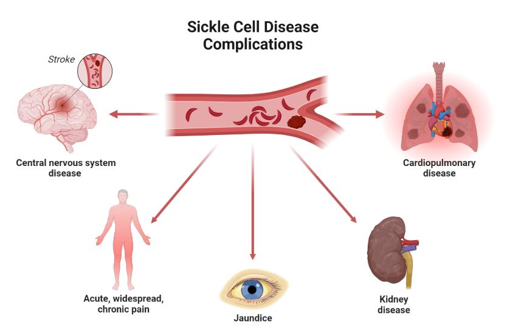

Complications
Sickle cell anemia can lead to a lot of complications, including:
- Stroke Sickle cells can block blood flow to the brain. Signs of stroke include seizures, weakness or numbness of the arms and legs, sudden speech difficulties, and loss of consciousness. If your child has any of these signs or symptoms, seek medical treatment right away. A stroke can be fatal.
- Acute Chest Syndrome: A lung infection or sickle cells blocking blood vessels in the lungs can cause this life-threatening complication. Symptoms include chest pain, fever and difficulty breathing. Acute chest syndrome might need emergency medical treatment.
- Avascular Necrosis: Sickle cells can block the blood vessels that supply blood to the bones. When the bones don't get enough blood, joints may narrow and bones can die. This can happen anywhere but most often happens in the hip.
- Pulmonary Hypertension: The spleen is important for protecting against infections. Sickle cells can damage the spleen, raising the risk of developing infections. Babies and children with sickle cell anemia commonly receive vaccinations and antibiotics to prevent potentially life-threatening infections, such as pneumonia.
- Organ Damage: Sickle cells that block blood flow to organs deprive the affected organs of blood and oxygen. In sickle cell anemia, blood also is low in oxygen. This lack of oxygen-rich blood can damage nerves and organs, including the kidneys, liver and spleen, and can be fatal.
- Splenic Sequestration: Sickle cells can get trapped in the spleen, causing it to enlarge. This may cause abdominal pain on the left side of the body and can be life-threatening. Parents of children with sickle cell anemia can learn how to locate and feel their child's spleen for enlargement.
- Blindness: Sickle cells can block tiny blood vessels that supply blood to the eyes. Over time, this can lead to blindness.
- Leg Ulcers: Sickle cell anemia can cause painful open sores on the legs.
- Gallstones: The breakdown of red blood cells produces a substance called bilirubin. A high level of bilirubin in the body can lead to gallstones.
- Priapism: Sickle cell anemia can cause painful, long-lasting erections, known as priapism. Sickle cells can block the blood vessels in the penis, which can lead to impotence over time.
- Deep Vein Thrombosis: Sickled red blood cells can cause blood clots, increasing the risk of a clot lodging in a deep vein, known as deep vein thrombosis. It also increases the risk of a blood clot lodging in a lung, known as pulmonary embolism. Either can cause serious illness or even death.
- Pregnancy Complications: Sickle cell anemia can increase the risk of high blood pressure and blood clots during pregnancy. It also can increase the risk of miscarriage, premature birth and low birth weight babies.
